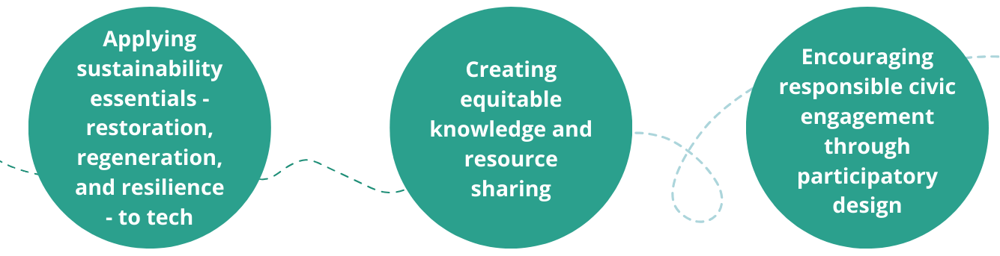

Research Interest
I do research as student researcher of the Inclusive Design Lab.
My research focuses on human-centered interaction with online community platforms by exploring ways people build communities of belonging and representation. I am particularly interested in youth digital rights and advocating for a more inclusive digital environment rooted in systemic design.
How can we co-create a society that is ecologically sound, socially just, and economically viable? Currently studying Environmental Science and Policy and Computer Science at Smith College, I am a sustainable HCI designer passionate about the intersection of tech and sustainability. My philosophy is critically engaging with responsible design in service of social issues.
Currently, I work as a design intern with aGILE social innovation lab, am a HCI researcher in the Inclusive Design Lab, and lead the UN SDGs @ Smith team in collaboration with the Conway Center for Innovation and Entrepreneurship.
Principles
I believe and approach work with my personal values:
Focus: Sustainable design and Systemic Thinking
My major focus is on addressing complex social, economic, and environmental challenges through holistic interdisciplinary approaches. I am interested in the ways we communicate and build collective knowledge around environmental topics, particularly through the use of visual storytelling.
Through a synthesis of design and systemic thinking, I advocate for innovative, participatory solutions.
Focus: Human Computer Interaction
My major focus is in Human-Computer Interaction (HCI), exploring the challenges and opportunities at the intersection of humanity and technology. I am particularly interested in the relationship between content moderation and internet censorship, specifically within educational settings and the digital landscape of play.
I hope to continue pursuing these interests within my career.